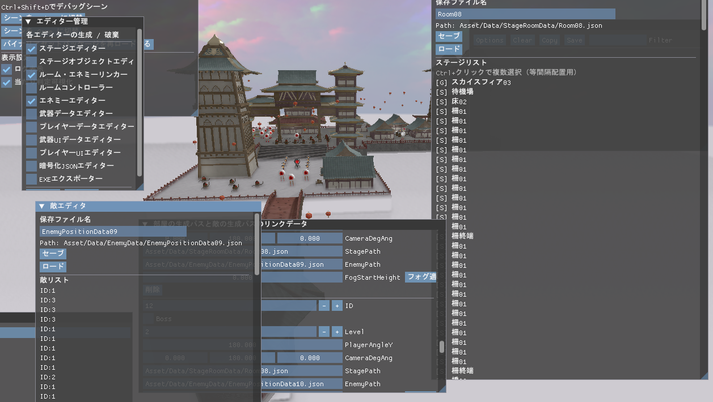
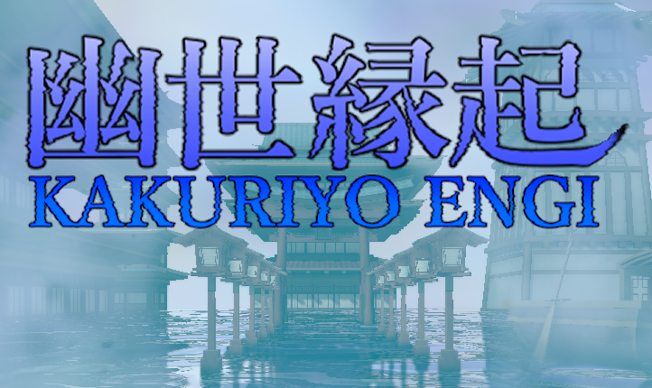
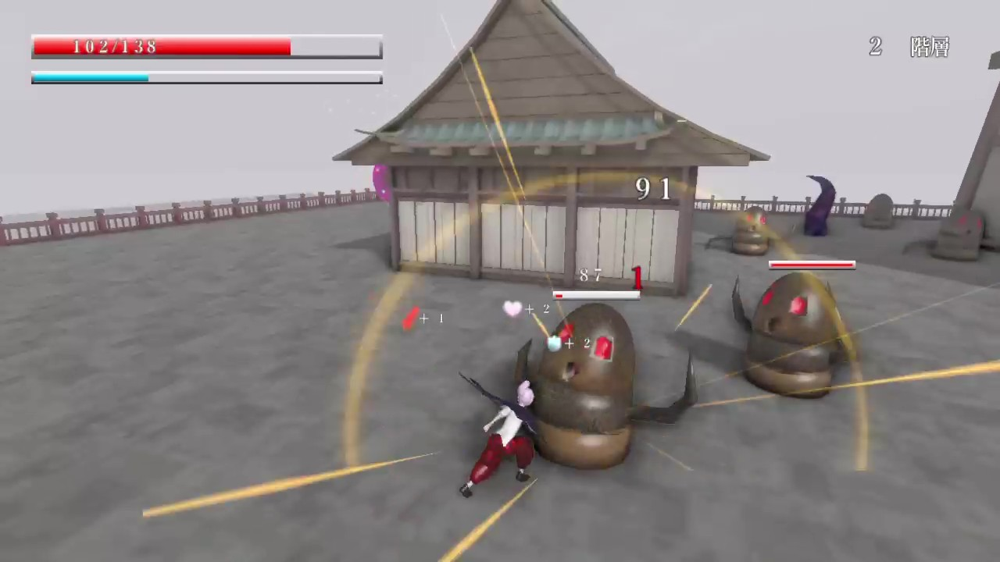
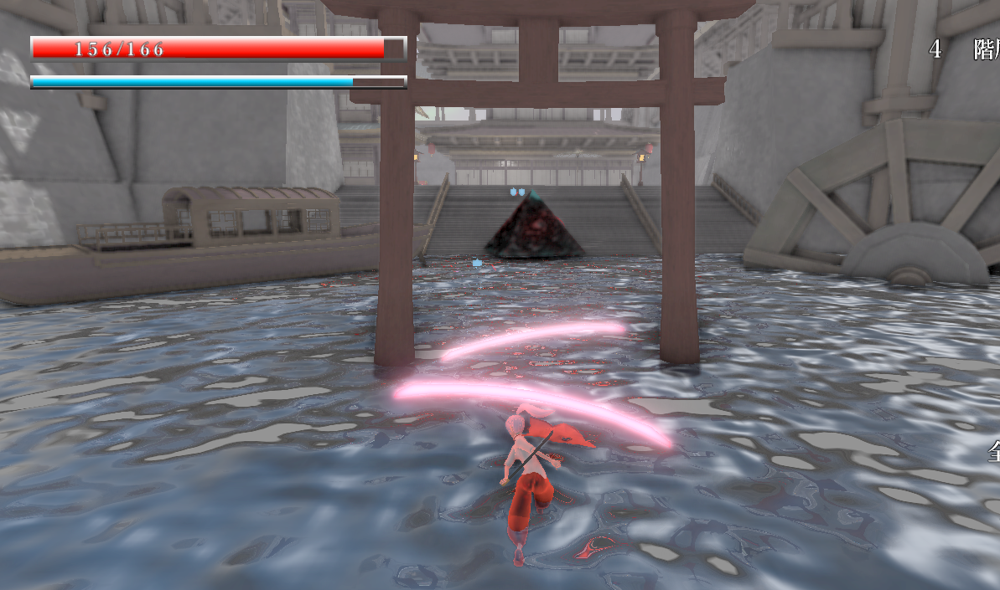
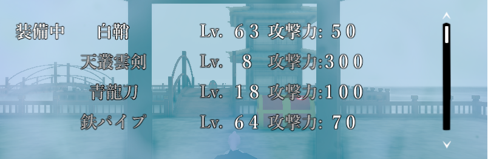
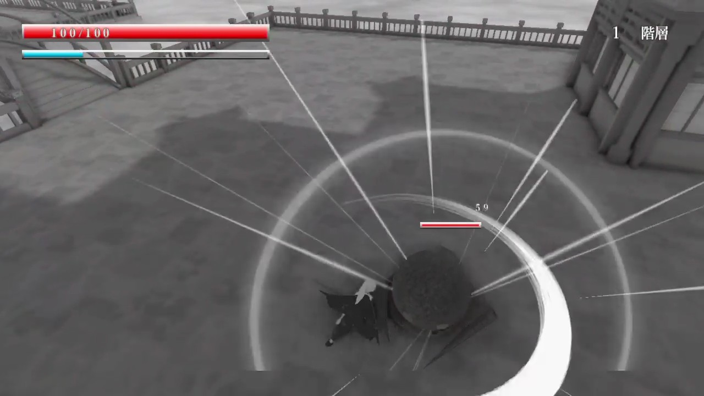
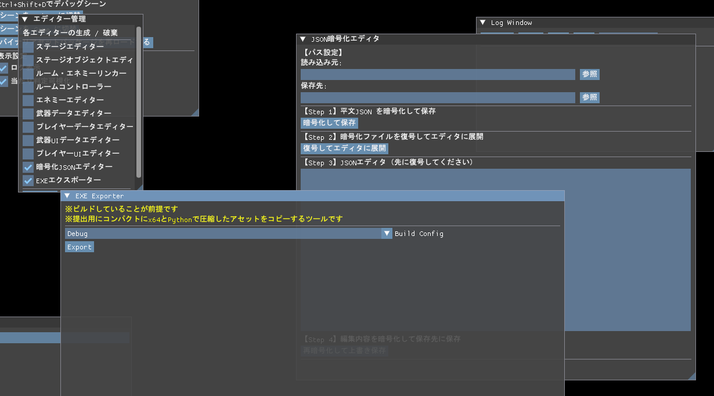

Point 01
データ駆動の階層生成
部屋と敵の構成はJSONで管理し、階層ごとに部屋データと敵データのパスをランダムに抽選して、ファクトリー経由で生成しています。同じ部屋が連続しないように直前の部屋IDを保持し、特定の階層だけ部屋を固定できる仕組みも用意しました。

No.01
最大999階層を潜る、3Dダンジョン探索アクション。
| ジャンル | 3Dダンジョン探索アクション |
|---|---|
| 制作期間 | 2026年2月〜11月 |
| 制作人数 | 1人（個人制作） |
| 開発環境 | C++ / DirectX 11 / HLSL / KdFramework |
| 対応機種 | Windows |
敵を倒して手に入る「かけら」でステータスを上げ、宝箱から拾った武器を強化しながら、より深い階層を目指すダンジョン探索アクションです。
5階層ごとにボスが待ち構えており、通路に張られた結界はボスを倒すまで解けません。ボスの先には次の階層へ続く階段と、地上へ帰還するための狛犬が置かれています。手に入れた武器は帰還しないと持ち帰れないため、「どこまで潜るか」の判断が遊びの軸になっています。
行動は通常攻撃・強攻撃・回避の3つだけ。
同じ武器を再び入手するとレベルアップ。帰還して初めて自分のものになる。
遠距離・中距離・近接を使い分けるボスが、5階層ごとに立ちはだかる。




Point 01
部屋と敵の構成はJSONで管理し、階層ごとに部屋データと敵データのパスをランダムに抽選して、ファクトリー経由で生成しています。同じ部屋が連続しないように直前の部屋IDを保持し、特定の階層だけ部屋を固定できる仕組みも用意しました。

Point 02
ヒットスロー・カメラシェイク・ノックバックを組み合わせて、攻撃が当たったときの気持ちよさを作っています。連続攻撃の「ラッシュ」中はスローとグレースケールを重ね、画面全体で特別な時間を演出しました。

Point 03
ステージ配置や敵ステータスはImGuiで作った自作エディタで編集できます。 このEditorはimguiの処理を書くようのfunctionのリストで管理しておりObjectのような挙動でEditorがつくれます。 アセットはPythonで1つのバイナリファイルにまとめ、ゲーム側ではメモリから直接読み込む形にしています。
最初は『黄泉之廻廊』というタイトルで作っていましたが、制作途中で『幽世縁起』に変更しました。 廻廊は閉鎖的な空間をイメージしてしまい開放的な空間にそぐわないと思い変えました。 黄泉比良坂の中身であるという設定やAssetだったらそのままの名前でした。
エディタの考え方は『Hollow Knight』のデバッグ機能を参考にしています。Unityのインスペクターのような汎用的な仕組みはあえて作らず、「必要になったら、そのオブジェクト用のGUIを作る」方針にしたことで、限られた時間でもゲーム本体のボリュームを優先できました。
アセットをまとめるデータ形式は『東方紅魔郷』のデータ構造から、タイトル画面の波紋シェーダーは『東方獣王園』から着想を得ています。好きな作品の「中身」を想像しながら作るのが、一番勉強になりました。 企画から音楽まで作品の隅々を理解しているZUNさんを目標に、一つひとつ丁寧に作ることを心がけました。
効果音は９割自作です。制作途中の夏には、作曲の練習と並行しながら開発を続けmidiキーボードでの生演奏にストリングスやコーラスを付け足す感じでタイトル曲が完成しました。